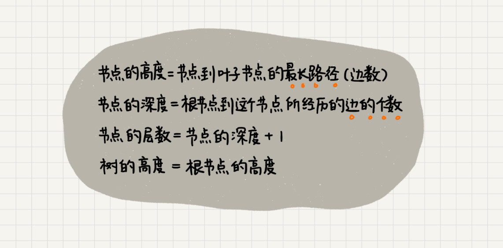
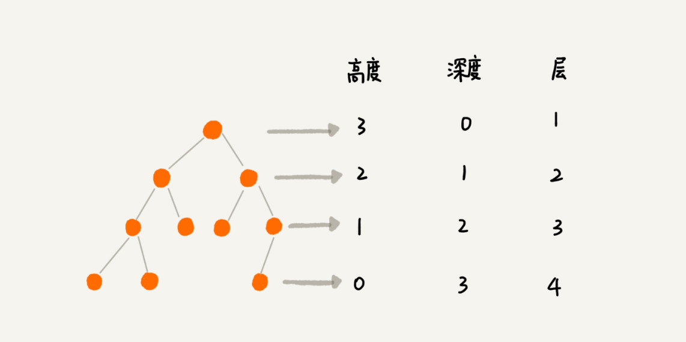
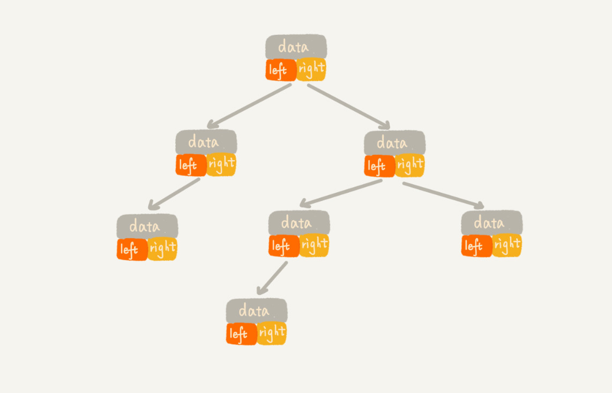
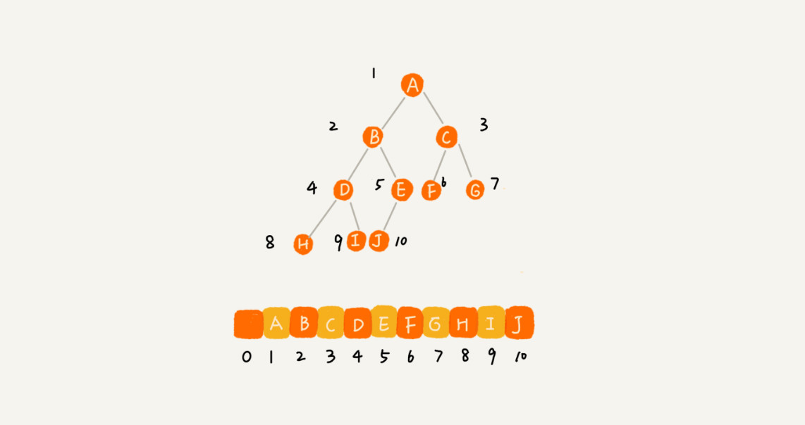
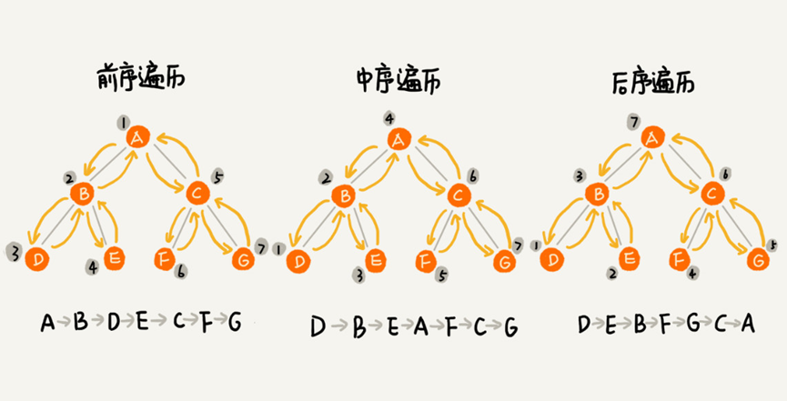

一、树
树的常用概念
根节点、叶子节点、父节点、子节点、兄弟节点，还有节点的高度、深度以及层数，树的高度。
概念解释
节点：树中的每个元素称为节点
父子关系：相邻两节点的连线，称为父子关系
根节点：没有父节点的节点
叶子节点：没有子节点的节点
父节点：指向子节点的节点
子节点：被父节点指向的节点
兄弟节点：具有相同父节点的多个节点称为兄弟节点关系
节点的高度：节点到叶子节点的最长路径所包含的边数
节点的深度：根节点到节点的路径所包含的边数
节点的层数：节点的深度+ 1（根节点的层数是1）
树的高度：等于根节点的高度

二、二叉树
概念
什么是二叉树？
每个节点最多只有
2个子节点的树，这两个节点分别是左子节点和右子节点。
什么是满二叉树？
有一种二叉树，除了叶子节点外，每个节点都有左右两个子节点，这种二叉树叫做满二叉树。
什么是完全二叉树？
有一种二叉树，叶子节点都在最底下两层，最后一层叶子节都靠左排列，并且除了最后一层，其他层的节点个数都要达到最大，这种二叉树叫做完全二叉树。
完全二叉树的存储
链式存储
每个节点由
3个字段，其中一个存储数据，另外两个是指向左右子节点的指针。我们只要拎住根节点，就可以通过左右子节点的指针，把整棵树都串起来。这种存储方式比较常用，大部分二叉树代码都是通过这种方式实现的。
顺序存储
用数组来存储，对于完全二叉树，如果节点
X存储在数组中的下标为i，那么它的左子节点的存储下标为2*i，右子节点的下标为2*i+1，反过来，下标i/2位置存储的就是该节点的父节点。注意，根节点存储在下标为1的位置。完全二叉树用数组来存储时最省内存的方式。
二叉树的遍历

前序遍历：
对于树中的任意节点来说，先打印这个节点，然后再打印它的左子树，最后打印它的右子树。
中序遍历：
对于树中的任意节点来说，先打印它的左子树，然后再打印它的本身，最后打印它的右子树。
后序遍历：
对于树中的任意节点来说，先打印它的左子树，然后再打印它的右子树，最后打印它本身。
写递归代码的关键，就是看能不能写出递推公式，而写递推公式的关键就是，如果要解决问题 A，就假设子问题 B、C 已经解决，然后再来看如何利用 B、C 来解决 A。
所以，我们可以把前、中、后序遍历的递推公式都写出来。
1 | 前序遍历的递推公式： |
有了递推公式，代码写起来就简单多了。
1 | void preOrder(Node* root) { |
时间复杂度：3种遍历方式中，每个节点最多会被访问2次，所以时间复杂度是$O(n)$。
三、思考
- 给定一组数据，比如
1，3，5，6，9，10.你来算算，可以构建出多少种不同的二叉树？确定两点：
1）n个数，即n个节点，能构造出多少种不同形态的树？
2）n个数，有多少种不同的排列？
当确定以上两点，将【1)的结果】乘以 【2)的结果】，即为最终的结果。
但是有一个注意的点： 如果n中有相等的数，产生的总排列数就不是$n!$了
具体可参考卡塔兰数
- 上面讲了三种二叉树的遍历方式，前、中、后序。实际上，还有另一种遍历方式，也就是按层遍历，你知道如何实现吗？
层序遍历，借用队列辅助即可，根节点先入队列，然后循环从队列中
pop节点，将pop出来的节点的左子节点先入队列，右节点后入队列，依次循环，直到队列为空，遍历结束。leetcode上有个类似的题目，点我链接


评论加载中